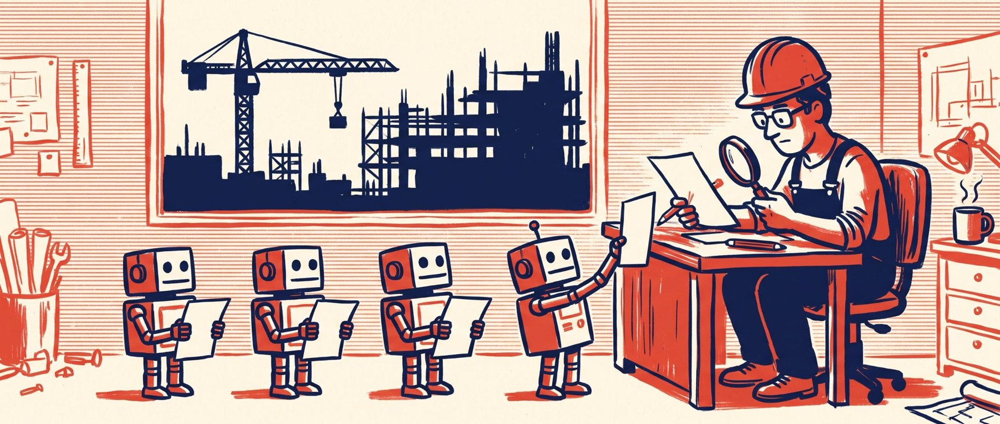

Intelligence artificielle
Ce que l'IA changera dans nos process

Pour le moment, l'IA est surtout l'occasion de tartiner des posts LinkedIn. Dans l'entreprise, elle est encore un nouveau gadget utilisé par certains. Je suis cependant déjà convaincu du potentiel qu'elle offre, et donc des modifications qu'elle va provoquer dans nos organisations. Dans cet article, j'ai essayé d'imaginer ce nouveau décor.
1Rebattre les cartes de la connaissance
L'IA générative est dans la continuité de ce que l'homme a mis des siècles à construire : un accès universel à la connaissance, à toute heure et en tout lieu.
En effet, dans la lignée des grandes ruptures, l'invention de l'écriture, l'imprimerie, l'école publique, l'IA vient à nouveau rebattre les cartes de qui peut accéder à l'information. Dès à présent, le facteur de réussite n'est ni le diplôme ni la catégorie sociale mais bien l'appétit d'apprendre et de faire. Heureux les curieux du XXIe siècle, ils n'ont pas fini de prompter.
En effet, dans une société où tout le monde a accès à l'IA, on peut s'attendre à ce que le niveau global des salariés augmente. Qu'est-ce qu'un projet trop complexe, qu'est-ce qu'un business trop pointu, pour celui qui se fera coacher étape par étape ? La barrière à l'entrée ne sera plus la complexité, mais la pugnacité.
2L'économie de l'attention
Quitter son poste à 18 h en lançant cinq agents sur trois projets différents, et revenir le matin pour contrôler, débloquer ou valider le travail réalisé : voilà ce qui est déjà en cours. Ainsi, nos métiers ne consisteront plus à faire, mais à contrôler.
Mais, et j'en fais l'expérience chaque jour, l'IA nous rend plus productifs. À volume horaire constant, on fait davantage en une journée. Une matinée ordinaire : un agent produit un brouillon de mémoire pendant qu'un autre cherche les points sensibles d'un dossier, et qu'un troisième a pour mission de trouver dix contacts d'entreprises ayant des références spécifiques. Deux choses changent. D'abord on parallélise là où on les enchaînait. Ensuite, on ne travaille plus seul. On expose son raisonnement à un tiers qui répond, objecte, propose une autre piste. On se challenge soi-même en discutant. Un chiffrage qu'on aurait réalisé dans son coin passe désormais par la moulinette de l'échange.
Cette délégation de tâches aura une conséquence pour les travailleurs : on oublie le superflu, et on revient à l'essence même de nos métiers. Un architecte ne passera plus ses journées sur un formulaire de permis de construire ou une énième notice descriptive. Ce temps retournera à ce pour quoi il a été formé : choisir des matériaux, comprendre leur mise en œuvre, dessiner. Aux études, on ne passera plus une demi-journée à lister les écarts entre deux versions de DCE. On la passera sur nos modes opératoires de construction ou l'élaboration de variantes techniques. L'ère des tâches administratives et des formulaires à outrance est déjà derrière nous. Un canal invisible pour l'homme, d'agent à agent, gèrera tout ce flux.
Nos métiers ne consisteront plus à faire, mais à contrôler.
Il nous restera alors deux rôles. Le premier est noble : produire le travail à haute valeur ajoutée, celui qu'on vient de décrire. Le second l'est moins : faire le sale boulot de contrôler les agents, non parce que c'est intéressant, mais parce que le travail agentique nous y oblige. Il faudra notamment nettoyer le fameux « AI slop », ce vomi de belles phrases, lisses et tièdes, qu'un modèle régurgite à partir de la moyenne de tout ce qu'il a lu, et ne pas se laisser tenter par la rondeur de la phrase sans accident.
Or relire n'est pas produire. Produire relève d'un mode presque automatique, où le cerveau est actif. Vérifier exige un mode sceptique, attentif, qu'on ne tient pas huit heures de suite. Une journée partagée entre ces deux pôles, sans plus aucune tâche simple pour souffler entre les deux, pourrait peser sur la qualité de vie au travail.
3La tokenisation du travail
Le patron de Mistral estime que le coût en tokens pour une entreprise serait de l'ordre de 10 % de la masse salariale. On peut se méfier de ce chiffre au vu de l'intérêt de celui qui l'a prononcé. Il est néanmoins évident que les entreprises devront, dans les prochains mois, provisionner des lignes comptables pour ce type de dépenses. Et une ligne budgétaire, ça se suit. On le voit déjà, dans certaines entreprises, la consommation de tokens est devenue un moyen d'évaluer la productivité, voire, pire, un moyen de contrôle au quotidien.
Le token n'est pourtant pas la seule spécificité cachée du déploiement. Une IA est un algorithme probabiliste : la qualité de ses réponses dépend directement du contexte qu'on lui fournit. Les entreprises devront donc organiser un « contexte global », partagé par les agents de tous les salariés : nos règles, nos documents, nos façons de faire. Puis, en dessous, une couche de contexte propre à chaque salarié, pour que son agent travaille au plus près de ses habitudes. Ce qui, au passage, amène la question de qui est propriétaire de ce contexte individualisé, construit tout au long de notre carrière. Tout cela se construit, en plus des nouvelles approches de management inévitables. Pour un groupe établi, c'est un chantier.
Les entreprises qui se lancent aujourd'hui, les « AI natives », n'ont pas ce chantier devant elles. Leurs process sont nés avec l'IA, leur contexte est en place dès le premier jour, et leurs architectures sont ultra efficaces sur ce plan. Cela leur donne une vélocité certaine et leur permettra, à taille plus limitée, d'empiéter sur les marchés de plus grandes entreprises.
Produire plus, et après ?
Si je résume le décor : l'accès à la connaissance s'ouvre à tous et le niveau monte. Nos métiers se recentrent sur l'essentiel, au prix d'une attention qu'il faudra préserver. Le token devient une ligne de coût. Les entreprises nées avec l'IA n'auront pas à payer la transition que nous avons devant nous. Tout cela converge vers un même point : nous produirons plus, avec moins de monde ou en moins de temps.
L'une des questions que les dirigeants auront à se poser est donc la suivante : si les salariés produisent davantage, faut-il choisir une augmentation de la production globale de l'entreprise, quitte à diminuer le bien-être au travail, ou rester à un niveau de production constant et accepter de dégager davantage de temps pour les salariés ?
Dans un prochain article, nous verrons plus concrètement comment les salariés verront leur environnement de travail évoluer.